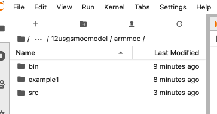
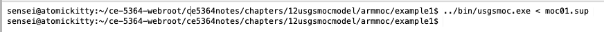

ARM7/AARCH 64 Build¶
Get source code from
If you choose the USGS source you will need to make minor modifications to the code to get a compile.
Put the sources into a location for compiling then run the makefile (below or downloaded)
GFORTRAN=gfortran
FFLAGS=
PROG=USGSMOC
VERSION=0.1
SOURCES=USGSMOC.FOR GENPT.FOR ITERAT.FOR MOVE.FOR PARLOD.FOR UTIL.FOR VELO.FOR
OBJS=${SOURCES:.f=.o}
all: USGSMOC
USGSMOC: ${SOURCES}
${GFORTRAN} ${FFLAGS} -o usgsmoc.exe ${SOURCES}
dist:
@mkdir ${PROG}-${VERSION}
@cp ${SOURCES} ${PROG}-${VERSION}
@cp Makefile ${PROG}-${VERSION}
@tar cvfz ${PROG}-${VERSION}.tar.gz ${PROG}-${VERSION}
@rm -rf ${PROG}-${VERSION}
clean:
@rm -f ${PROG} ${OBJS} core
Once the build is complete (no errors; warnings to be expected)
Move the binary to somewhere meaningful; on my machine the directory structure looks like

The executible is located in bin
Next build a supervisory file in a directory with an input file like
The contents of the supervisory file moc01.sup are literally the input file name, and an output file name.
MOC01.INP
JUNK.OUT
The contents of the input file MOC01.INP are.
Example 1 From Notes -- Zero Dispersion Simulation
1,1,9,9,3200,1,7,1,100,0,9,2,10,1,0,0,0,0
2.0,0.001,0.30,0.0,0.0,0.0,0.0,900.0,900.0,0.30,0.49,1.0
5,5 Observation Well
0 0.1 Transmissivity
0 20.0 Thickness
0 0.0 Recharge
1 1.0 Boundary and I/C array
0 0 0 0 0 0 0 0 0
0 0 0 0 0 1 1 1 0
0 0 0 0 0 0 0 0 0
0 0 0 0 0 0 0 0 0
0 0 0 0 0 0 0 0 0
0 0 0 0 0 0 0 0 0
0 0 0 0 0 0 0 0 0
0 2 2 2 0 0 0 0 0
0 0 0 0 0 0 0 0 0
1,1.00,0.00,0.00,0 Leakance terms at special nodes
2,1.00,0.00,0.00,0
1 100.0 initial head
0 0 0 0 0 0 0 0 0
0 0 0 0 0 1 1 1 0
0 0 0 0 0 0 0 0 0
0 0 0 0 0 0 0 0 0
0 0 0 0 0 0 0 0 0
0 0 0 0 0 0 0 0 0
0 0 0 0 0 0 0 0 0
0 .8 .8 .8 0 0 0 0 0
0 0 0 0 0 0 0 0 0
1 100.0 initial concentration
0 0 0 0 0 0 0 0 0
0 0 0 0 0 0 0 0 0
0 0 0 0 1 1 1 1 0
0 0 0 0 0 0 0 0 0
0 0 0 0 0 0 0 0 0
0 0 0 0 0 0 0 0 0
0 0 0 0 0 0 0 0 0
0 0 0 0 0 0 0 0 0
0 0 0 0 0 0 0 0 0
To run the model, navigate a terminal window to the example directory and execute the model like:

Or (which is way cool) just execute from Jupyter as shown below:
Get enough of the path
! pwd
/home/sensei/ce-5364-webroot/ce5364notes/chapters/12usgsmocmodel
Copy the application into local directory
! cp ./armmoc/bin/usgsmoc.exe ./
Copy the input file and supervisory file, and then run the application
! cp ./armmoc/example1/MOC01.INP ./
! cp ./armmoc/example1/moc01.sup ./
! ./usgsmoc.exe < moc01.sup
cp: cannot stat './armmoc/example1/MOC01.INP': No such file or directory
cp: cannot stat './armmoc/example1/moc01.sup': No such file or directory
Display the output (which we will need to postprocess to make pretty pictures). Generally we can either modify the FORTRAN code to control output, or parse the output file below. Writing a parser is usually easier, if you are a spreadsheeter, you will grab and plot various arrays from the file below.
! cat JUNK.OUT
1U.S.G.S. METHOD-OF-CHARACTERISTICS MODEL FOR SOLUTE TRANSPORT IN GROUND WATER
0Example 1 From Notes -- Zero Dispersion Simulation
0 I N P U T D A T A
0 GRID DESCRIPTORS
NX (NUMBER OF COLUMNS) = 9
NY (NUMBER OF ROWS) = 9
XDEL (X-DISTANCE IN FEET) = 900.0
YDEL (Y-DISTANCE IN FEET) = 900.0
0 TIME PARAMETERS
NTIM (MAX. NO. OF TIME STEPS) = 1
NPMP (NO. OF PUMPING PERIODS) = 1
PINT (PUMPING PERIOD IN YEARS) = 2.000
TIMX (TIME INCREMENT MULTIPLIER) = 0.00
TINIT (INITIAL TIME STEP IN SEC.) = 0.
0 HYDROLOGIC AND CHEMICAL PARAMETERS
S (STORAGE COEFFICIENT) = 0.000000
POROS (EFFECTIVE POROSITY) = 0.300
BETA (LONGITUDINAL DISPERSIVITY) = 0.0
DLTRAT (RATIO OF TRANSVERSE TO
LONGITUDINAL DISPERSIVITY) = 0.30
ANFCTR (RATIO OF T-YY TO T-XX) = 1.000000
0 EXECUTION PARAMETERS
NITP (NO. OF ITERATION PARAMETERS) = 7
TOL (CONVERGENCE CRITERIA - ADIP) = 0.10E-02
ITMAX (MAX.NO.OF ITERATIONS - ADIP) = 100
CELDIS (MAX.CELL DISTANCE PER MOVE
OF PARTICLES - M.O.C.) = 0.490
NPMAX (MAX. NO. OF PARTICLES) = 3200
NPTPND (NO. PARTICLES PER NODE) = 9
1
0 PROGRAM OPTIONS
NPNT (TIME STEP INTERVAL FOR
COMPLETE PRINTOUT) = 1
NPNTMV (MOVE INTERVAL FOR CHEM.
CONCENTRATION PRINTOUT) = 10
NPNTVL (TIME STEP INTERVAL FOR
VELOCITY PRINTOUT; 0=NEVER;
-1=FIRST TIME STEP;
-2=LAST TIME STEP) = 1
NPNTD (PRINT OPTION-DISP.COEF.
0=NO; 1=FIRST TIME STEP;
2=ALL TIME STEPS) = 0
NUMOBS (NO. OF OBSERVATION WELLS
FOR HYDROGRAPH PRINTOUT) = 1
NREC (NO. OF PUMPING WELLS) = 0
NCODES (FOR NODE IDENT.) = 2
NPNCHV (TIME STEP INTERVAL FOR
VELOCITY PRINTOUT ON
FILE UNIT 7; 0=NEVER;
-1=FIRST TIME STEP;
-2=LAST TIME STEP) = 0
NPDELC (PRINT OPT.-CONC. CHANGE) = 0
0 REACTION TERMS
DK (DISTRIBUTION COEFFICIENT) = 0.00000E+00
RHOB (BULK DENSITY OF SOLIDS) = 0.00000E+00
RF (RETARDATION FACTOR) = 0.10000E+01
THALF (HALF LIFE OF DECAY,IN SEC)= 0.00000E+00
DECAY (DECAY CONSTANT=LN 2/THALF)= 0.00000E+00
1 STEADY-STATE FLOW
TIME INTERVALS (IN SEC) FOR SOLUTE-TRANSPORT SIMULATION
0.63115E+08
0 LOCATION OF OBSERVATION WELLS
NO. X Y
1 5 5
0 AREA OF ONE CELL = 0.8100E+06
0 X-Y SPACING:
900.00
900.00
1TRANSMISSIVITY MAP (FT*FT/SEC)
0.00E+00 0.00E+00 0.00E+00 0.00E+00 0.00E+00 0.00E+00 0.00E+00 0.00E+00 0.00E+00
0.00E+00 1.00E-01 1.00E-01 1.00E-01 1.00E-01 1.00E-01 1.00E-01 1.00E-01 0.00E+00
0.00E+00 1.00E-01 1.00E-01 1.00E-01 1.00E-01 1.00E-01 1.00E-01 1.00E-01 0.00E+00
0.00E+00 1.00E-01 1.00E-01 1.00E-01 1.00E-01 1.00E-01 1.00E-01 1.00E-01 0.00E+00
0.00E+00 1.00E-01 1.00E-01 1.00E-01 1.00E-01 1.00E-01 1.00E-01 1.00E-01 0.00E+00
0.00E+00 1.00E-01 1.00E-01 1.00E-01 1.00E-01 1.00E-01 1.00E-01 1.00E-01 0.00E+00
0.00E+00 1.00E-01 1.00E-01 1.00E-01 1.00E-01 1.00E-01 1.00E-01 1.00E-01 0.00E+00
0.00E+00 1.00E-01 1.00E-01 1.00E-01 1.00E-01 1.00E-01 1.00E-01 1.00E-01 0.00E+00
0.00E+00 0.00E+00 0.00E+00 0.00E+00 0.00E+00 0.00E+00 0.00E+00 0.00E+00 0.00E+00
1AQUIFER THICKNESS (FT)
0.0 0.0 0.0 0.0 0.0 0.0 0.0 0.0 0.0
0.0 20.0 20.0 20.0 20.0 20.0 20.0 20.0 0.0
0.0 20.0 20.0 20.0 20.0 20.0 20.0 20.0 0.0
0.0 20.0 20.0 20.0 20.0 20.0 20.0 20.0 0.0
0.0 20.0 20.0 20.0 20.0 20.0 20.0 20.0 0.0
0.0 20.0 20.0 20.0 20.0 20.0 20.0 20.0 0.0
0.0 20.0 20.0 20.0 20.0 20.0 20.0 20.0 0.0
0.0 20.0 20.0 20.0 20.0 20.0 20.0 20.0 0.0
0.0 0.0 0.0 0.0 0.0 0.0 0.0 0.0 0.0
1DIFFUSE RECHARGE AND DISCHARGE (FT/SEC)
0.00E+00 0.00E+00 0.00E+00 0.00E+00 0.00E+00 0.00E+00 0.00E+00 0.00E+00 0.00E+00
0.00E+00 0.00E+00 0.00E+00 0.00E+00 0.00E+00 0.00E+00 0.00E+00 0.00E+00 0.00E+00
0.00E+00 0.00E+00 0.00E+00 0.00E+00 0.00E+00 0.00E+00 0.00E+00 0.00E+00 0.00E+00
0.00E+00 0.00E+00 0.00E+00 0.00E+00 0.00E+00 0.00E+00 0.00E+00 0.00E+00 0.00E+00
0.00E+00 0.00E+00 0.00E+00 0.00E+00 0.00E+00 0.00E+00 0.00E+00 0.00E+00 0.00E+00
0.00E+00 0.00E+00 0.00E+00 0.00E+00 0.00E+00 0.00E+00 0.00E+00 0.00E+00 0.00E+00
0.00E+00 0.00E+00 0.00E+00 0.00E+00 0.00E+00 0.00E+00 0.00E+00 0.00E+00 0.00E+00
0.00E+00 0.00E+00 0.00E+00 0.00E+00 0.00E+00 0.00E+00 0.00E+00 0.00E+00 0.00E+00
0.00E+00 0.00E+00 0.00E+00 0.00E+00 0.00E+00 0.00E+00 0.00E+00 0.00E+00 0.00E+00
1PERMEABILTY MAP (FT/SEC)
0.00E+00 0.00E+00 0.00E+00 0.00E+00 0.00E+00 0.00E+00 0.00E+00 0.00E+00 0.00E+00
0.00E+00 5.00E-03 5.00E-03 5.00E-03 5.00E-03 5.00E-03 5.00E-03 5.00E-03 0.00E+00
0.00E+00 5.00E-03 5.00E-03 5.00E-03 5.00E-03 5.00E-03 5.00E-03 5.00E-03 0.00E+00
0.00E+00 5.00E-03 5.00E-03 5.00E-03 5.00E-03 5.00E-03 5.00E-03 5.00E-03 0.00E+00
0.00E+00 5.00E-03 5.00E-03 5.00E-03 5.00E-03 5.00E-03 5.00E-03 5.00E-03 0.00E+00
0.00E+00 5.00E-03 5.00E-03 5.00E-03 5.00E-03 5.00E-03 5.00E-03 5.00E-03 0.00E+00
0.00E+00 5.00E-03 5.00E-03 5.00E-03 5.00E-03 5.00E-03 5.00E-03 5.00E-03 0.00E+00
0.00E+00 5.00E-03 5.00E-03 5.00E-03 5.00E-03 5.00E-03 5.00E-03 5.00E-03 0.00E+00
0.00E+00 0.00E+00 0.00E+00 0.00E+00 0.00E+00 0.00E+00 0.00E+00 0.00E+00 0.00E+00
0 NO. OF FINITE-DIFFERENCE CELLS IN AQUIFER = 49
AREA OF AQUIFER IN MODEL = 0.39690E+08 SQ. FT.
NZCRIT (MAX. NO. OF CELLS THAT CAN BE VOID OF
PARTICLES; IF EXCEEDED, PARTICLES ARE REGENERATED) = 1
1NODE IDENTIFICATION MAP
0 0 0 0 0 0 0 0 0
0 0 0 0 0 1 1 1 0
0 0 0 0 0 0 0 0 0
0 0 0 0 0 0 0 0 0
0 0 0 0 0 0 0 0 0
0 0 0 0 0 0 0 0 0
0 0 0 0 0 0 0 0 0
0 2 2 2 0 0 0 0 0
0 0 0 0 0 0 0 0 0
0 NO. OF NODE IDENT. CODES SPECIFIED = 2
0 THE FOLLOWING ASSIGNMENTS HAVE BEEN MADE:
CODE NO. LEAKANCE SOURCE CONC. RECHARGE
0 1 0.100E+01 0.00
0 2 0.100E+01 0.00
1VERTICAL PERMEABILITY/THICKNESS (FT/(FT*SEC))
0.00E+00 0.00E+00 0.00E+00 0.00E+00 0.00E+00 0.00E+00 0.00E+00 0.00E+00 0.00E+00
0.00E+00 0.00E+00 0.00E+00 0.00E+00 0.00E+00 1.00E+00 1.00E+00 1.00E+00 0.00E+00
0.00E+00 0.00E+00 0.00E+00 0.00E+00 0.00E+00 0.00E+00 0.00E+00 0.00E+00 0.00E+00
0.00E+00 0.00E+00 0.00E+00 0.00E+00 0.00E+00 0.00E+00 0.00E+00 0.00E+00 0.00E+00
0.00E+00 0.00E+00 0.00E+00 0.00E+00 0.00E+00 0.00E+00 0.00E+00 0.00E+00 0.00E+00
0.00E+00 0.00E+00 0.00E+00 0.00E+00 0.00E+00 0.00E+00 0.00E+00 0.00E+00 0.00E+00
0.00E+00 0.00E+00 0.00E+00 0.00E+00 0.00E+00 0.00E+00 0.00E+00 0.00E+00 0.00E+00
0.00E+00 1.00E+00 1.00E+00 1.00E+00 0.00E+00 0.00E+00 0.00E+00 0.00E+00 0.00E+00
0.00E+00 0.00E+00 0.00E+00 0.00E+00 0.00E+00 0.00E+00 0.00E+00 0.00E+00 0.00E+00
1WATER TABLE
0. 0. 0. 0. 0. 0. 0. 0. 0.
0. 0. 0. 0. 0. 100. 100. 100. 0.
0. 0. 0. 0. 0. 0. 0. 0. 0.
0. 0. 0. 0. 0. 0. 0. 0. 0.
0. 0. 0. 0. 0. 0. 0. 0. 0.
0. 0. 0. 0. 0. 0. 0. 0. 0.
0. 0. 0. 0. 0. 0. 0. 0. 0.
0. 80. 80. 80. 0. 0. 0. 0. 0.
0. 0. 0. 0. 0. 0. 0. 0. 0.
1HEAD DISTRIBUTION - ROW
NUMBER OF TIME STEPS = 0
TIME(SECONDS) = 0.0000
TIME(DAYS) = 0.00000E+00
TIME(YEARS) = 0.00000E+00
0 0.0000000 0.0000000 0.0000000 0.0000000 0.0000000 0.0000000 0.0000000 0.0000000 0.0000000
0 0.0000000 0.0000000 0.0000000 0.0000000 0.0000000 100.0000000 100.0000000 100.0000000 0.0000000
0 0.0000000 0.0000000 0.0000000 0.0000000 0.0000000 0.0000000 0.0000000 0.0000000 0.0000000
0 0.0000000 0.0000000 0.0000000 0.0000000 0.0000000 0.0000000 0.0000000 0.0000000 0.0000000
0 0.0000000 0.0000000 0.0000000 0.0000000 0.0000000 0.0000000 0.0000000 0.0000000 0.0000000
0 0.0000000 0.0000000 0.0000000 0.0000000 0.0000000 0.0000000 0.0000000 0.0000000 0.0000000
0 0.0000000 0.0000000 0.0000000 0.0000000 0.0000000 0.0000000 0.0000000 0.0000000 0.0000000
0 0.0000000 80.0000000 80.0000000 80.0000000 0.0000000 0.0000000 0.0000000 0.0000000 0.0000000
0 0.0000000 0.0000000 0.0000000 0.0000000 0.0000000 0.0000000 0.0000000 0.0000000 0.0000000
1ITERATION PARAMETERS
0.304617E-01
0.545083E-01
0.975371E-01
0.174533
0.312309
0.558846
1.00000
1CONCENTRATION
NUMBER OF TIME STEPS = 0
TIME(SECONDS) = 0.0000
CHEM.TIME(SECONDS) = 0.00000E+00
CHEM.TIME(DAYS) = 0.00000E+00
TIME(YEARS) = 0.00000E+00
CHEM.TIME(YEARS) = 0.00000E+00
NO. MOVES COMPLETED = 0
0 0 0 0 0 0 0 0 0 0
0 0 0 0 0 0 0 0 0 0
0 0 0 0 0 100 100 100 100 0
0 0 0 0 0 0 0 0 0 0
0 0 0 0 0 0 0 0 0 0
0 0 0 0 0 0 0 0 0 0
0 0 0 0 0 0 0 0 0 0
0 0 0 0 0 0 0 0 0 0
0 0 0 0 0 0 0 0 0 0
0
N = 1
NUMBER OF ITERATIONS = 21
1HEAD DISTRIBUTION - ROW
NUMBER OF TIME STEPS = 1
TIME(SECONDS) = 0.63115E+08
TIME(DAYS) = 0.73050E+03
TIME(YEARS) = 0.20000E+01
0 0.0000000 0.0000000 0.0000000 0.0000000 0.0000000 0.0000000 0.0000000 0.0000000 0.0000000
0 0.0000000 91.2600937 91.9314154 93.3617891 95.8106718 99.9999990 99.9999996 99.9999996 0.0000000
0 0.0000000 90.5887555 91.1718274 92.3433005 94.0700473 96.0735067 96.8552139 97.1476029 0.0000000
0 0.0000000 89.3340897 89.8235018 90.7690936 92.0526166 93.3686344 94.1995344 94.5875248 0.0000000
0 0.0000000 87.5897480 88.0186605 88.8565765 90.0025203 91.1485704 91.9864809 92.4152975 0.0000000
0 0.0000000 85.4162959 85.8045092 86.6356901 87.9521521 89.2363045 90.1822147 90.6716888 0.0000000
0 0.0000000 82.8544910 83.1471064 83.9292131 85.9339228 87.6619020 88.8340484 89.4172905 0.0000000
0 0.0000000 80.0000004 80.0000004 80.0000010 84.1923304 86.6428873 88.0744501 88.7458785 0.0000000
0 0.0000000 0.0000000 0.0000000 0.0000000 0.0000000 0.0000000 0.0000000 0.0000000 0.0000000
1HEAD DISTRIBUTION - ROW
NUMBER OF TIME STEPS = 1
TIME(SECONDS) = 0.63115E+08
TIME(DAYS) = 0.73050E+03
TIME(YEARS) = 0.20000E+01
0 0 0 0 0 0 0 0 0 0
0 0 91 92 93 96 100 100 100 0
0 0 91 91 92 94 96 97 97 0
0 0 89 90 91 92 93 94 95 0
0 0 88 88 89 90 91 92 92 0
0 0 85 86 87 88 89 90 91 0
0 0 83 83 84 86 88 89 89 0
0 0 80 80 80 84 87 88 89 0
0 0 0 0 0 0 0 0 0 0
1DRAWDOWN
0 0 0 0 0 0 0 0 0
0 -91 -92 -93 -96 0 0 0 0
0 -91 -91 -92 -94 -96 -97 -97 0
0 -89 -90 -91 -92 -93 -94 -95 0
0 -88 -88 -89 -90 -91 -92 -92 0
0 -85 -86 -87 -88 -89 -90 -91 0
0 -83 -83 -84 -86 -88 -89 -89 0
0 0 0 0 -84 -87 -88 -89 0
0 0 0 0 0 0 0 0 0
0 CUMULATIVE MASS BALANCE -- (IN FT**3)
RECHARGE AND INJECTION = 0.00000E+00
PUMPAGE AND E-T WITHDRAWAL = 0.00000E+00
CUMULATIVE NET PUMPAGE = 0.00000E+00
WATER RELEASE FROM STORAGE = 0.00000E+00
LEAKAGE INTO AQUIFER = 0.89077E+08
LEAKAGE OUT OF AQUIFER = -0.89136E+08
CUMULATIVE NET LEAKAGE = -0.59690E+05
0 MASS BALANCE RESIDUAL = -59690.
ERROR (AS PERCENT) = -0.66988E-01
0 RATE MASS BALANCE -- (IN C.F.S.)
LEAKAGE INTO AQUIFER = 0.14113E+01
LEAKAGE OUT OF AQUIFER = -0.14123E+01
NET LEAKAGE (QNET) = -0.94574E-03
RECHARGE AND INJECTION = 0.00000E+00
PUMPAGE AND E-T WITHDRAWAL = 0.00000E+00
NET WITHDRAWAL (TPUM) = 0.00000E+00
1X VELOCITIES
AT NODES
0.000E+00 0.000E+00 0.000E+00 0.000E+00 0.000E+00 0.000E+00 0.000E+00 0.000E+00 0.000E+00
0.000E+00 -6.216E-06 -1.946E-05 -3.592E-05 -6.146E-05 -3.879E-05 -6.017E-12 -3.342E-13 0.000E+00
0.000E+00 -5.399E-06 -1.625E-05 -2.684E-05 -3.454E-05 -2.579E-05 -9.945E-06 -2.707E-06 0.000E+00
0.000E+00 -4.532E-06 -1.329E-05 -2.064E-05 -2.407E-05 -1.988E-05 -1.129E-05 -3.593E-06 0.000E+00
0.000E+00 -3.971E-06 -1.173E-05 -1.837E-05 -2.122E-05 -1.837E-05 -1.173E-05 -3.971E-06 0.000E+00
0.000E+00 -3.595E-06 -1.129E-05 -1.989E-05 -2.408E-05 -2.065E-05 -1.329E-05 -4.532E-06 0.000E+00
0.000E+00 -2.709E-06 -9.951E-06 -2.580E-05 -3.456E-05 -2.685E-05 -1.625E-05 -5.400E-06 0.000E+00
0.000E+00 -3.345E-13 -6.020E-12 -3.882E-05 -6.151E-05 -3.595E-05 -1.947E-05 -6.217E-06 0.000E+00
0.000E+00 0.000E+00 0.000E+00 0.000E+00 0.000E+00 0.000E+00 0.000E+00 0.000E+00 0.000E+00
1Y VELOCITIES
AT NODES
0.000E+00 0.000E+00 0.000E+00 0.000E+00 0.000E+00 0.000E+00 0.000E+00 0.000E+00 0.000E+00
0.000E+00 6.216E-06 7.033E-06 9.430E-06 1.612E-05 3.636E-05 2.912E-05 2.641E-05 0.000E+00
0.000E+00 1.783E-05 1.952E-05 2.401E-05 3.480E-05 6.140E-05 5.371E-05 5.012E-05 0.000E+00
0.000E+00 2.777E-05 2.920E-05 3.228E-05 3.766E-05 4.560E-05 4.508E-05 4.382E-05 0.000E+00
0.000E+00 3.628E-05 3.721E-05 3.827E-05 3.797E-05 3.826E-05 3.720E-05 3.626E-05 0.000E+00
0.000E+00 4.384E-05 4.511E-05 4.562E-05 3.767E-05 3.228E-05 2.919E-05 2.776E-05 0.000E+00
0.000E+00 5.015E-05 5.375E-05 6.144E-05 3.481E-05 2.401E-05 1.952E-05 1.783E-05 0.000E+00
0.000E+00 2.643E-05 2.914E-05 3.638E-05 1.613E-05 9.435E-06 7.033E-06 6.217E-06 0.000E+00
0.000E+00 0.000E+00 0.000E+00 0.000E+00 0.000E+00 0.000E+00 0.000E+00 0.000E+00 0.000E+00
1 STABILITY CRITERIA --- M.O.C.
0 MAXIMUM FLUID VELOCITIES: X-VEL = 7.76E-05 Y-VEL = 7.28E-05
0 TMV (MAX. INJ.) = 0.59881E+07
TIMV (CELDIS) = 0.56804E+07
0 TIMV = 5.68E+06 NTIMV = 11 NMOV = 12
TIM (N) = 0.63115E+08
TIMEVELO = 0.52596E+07
0 THE LIMITING STABILITY CRITERION IS CELDIS
MAX. X-VEL. IS CONSTRAINT AND OCCURS BETWEEN NODES ( 4, 8) AND ( 5, 8)
0 NO. OF PARTICLE MOVES REQUIRED TO COMPLETE THIS TIME STEP = 12
0 NP = 441 IMOV = 1
TIM(N) = 0.63115E+08 TIMV = 0.52596E+07 SUMTCH = 0.52596E+07
0 NP = 441 IMOV = 2
TIM(N) = 0.63115E+08 TIMV = 0.52596E+07 SUMTCH = 0.10519E+08
0 NP = 442 IMOV = 3
TIM(N) = 0.63115E+08 TIMV = 0.52596E+07 SUMTCH = 0.15779E+08
0 NP = 442 IMOV = 4
TIM(N) = 0.63115E+08 TIMV = 0.52596E+07 SUMTCH = 0.21038E+08
0 NP = 444 IMOV = 5
TIM(N) = 0.63115E+08 TIMV = 0.52596E+07 SUMTCH = 0.26298E+08
0 NP = 451 IMOV = 6
TIM(N) = 0.63115E+08 TIMV = 0.52596E+07 SUMTCH = 0.31558E+08
0 NP = 453 IMOV = 7
TIM(N) = 0.63115E+08 TIMV = 0.52596E+07 SUMTCH = 0.36817E+08
0 NP = 453 IMOV = 8
TIM(N) = 0.63115E+08 TIMV = 0.52596E+07 SUMTCH = 0.42077E+08
0 NP = 460 IMOV = 9
TIM(N) = 0.63115E+08 TIMV = 0.52596E+07 SUMTCH = 0.47336E+08
0 NP = 460 IMOV = 10
TIM(N) = 0.63115E+08 TIMV = 0.52596E+07 SUMTCH = 0.52596E+08
1CONCENTRATION
NUMBER OF TIME STEPS = 1
DELTA T = 0.63115E+08
TIME(SECONDS) = 0.63115E+08
CHEM.TIME(SECONDS) = 0.52596E+08
CHEM.TIME(DAYS) = 0.60875E+03
TIME(YEARS) = 0.20000E+01
CHEM.TIME(YEARS) = 0.16667E+01
NO. MOVES COMPLETED = 10
0 0 0 0 0 0 0 0 0 0
0 0 0 0 0 0 0 0 0 0
0 0 0 0 0 0 0 0 0 0
0 0 0 22 0 0 0 0 0 0
0 0 0 20 75 33 22 25 33 0
0 0 0 0 22 50 40 33 25 0
0 0 0 0 0 0 0 0 0 0
0 0 0 0 0 0 0 0 0 0
0 0 0 0 0 0 0 0 0 0
CHEMICAL MASS BALANCE
MASS IN BOUNDARIES = 0.00000E+00
MASS OUT BOUNDARIES = 0.00000E+00
MASS PUMPED IN = -0.00000E+00
MASS PUMPED OUT = -0.00000E+00
MASS LOST BY DECAY = 0.00000E+00
MASS ADSORBED ON SOLIDS= 0.00000E+00
INITIAL MASS ADSORBED = 0.00000E+00
INFLOW MINUS OUTFLOW = 0.00000E+00
INITIAL MASS DISSOLVED = 0.19440E+10
PRESENT MASS DISSOLVED = 0.19521E+10
CHANGE MASS DISSOLVED = 0.81000E+07
CHANGE TOTL.MASS STORED= 0.81000E+07
COMPARE RESIDUAL WITH NET FLUX AND MASS ACCUMULATION:
MASS BALANCE RESIDUAL = -0.81000E+07
ERROR (AS PERCENT) = 0.00000E+00
COMPARE INITIAL MASS STORED WITH CHANGE IN MASS STORED:
ERROR (AS PERCENT) = 0.41667E+00
0 NP = 460 IMOV = 11
TIM(N) = 0.63115E+08 TIMV = 0.52596E+07 SUMTCH = 0.57856E+08
0 NP = 466 IMOV = 12
TIM(N) = 0.63115E+08 TIMV = 0.52596E+07 SUMTCH = 0.63115E+08
1CONCENTRATION
NUMBER OF TIME STEPS = 1
DELTA T = 0.63115E+08
TIME(SECONDS) = 0.63115E+08
CHEM.TIME(SECONDS) = 0.63115E+08
CHEM.TIME(DAYS) = 0.73050E+03
TIME(YEARS) = 0.20000E+01
CHEM.TIME(YEARS) = 0.20000E+01
NO. MOVES COMPLETED = 12
0 0 0 0 0 0 0 0 0 0
0 0 0 0 0 0 0 0 0 0
0 0 0 0 0 0 0 0 0 0
0 0 0 0 0 0 0 0 0 0
0 0 0 50 25 0 0 0 0 0
0 0 0 20 78 67 38 75 60 0
0 0 0 0 0 0 0 0 0 0
0 0 0 0 0 0 0 0 0 0
0 0 0 0 0 0 0 0 0 0
CHEMICAL MASS BALANCE
MASS IN BOUNDARIES = 0.00000E+00
MASS OUT BOUNDARIES = 0.00000E+00
MASS PUMPED IN = -0.00000E+00
MASS PUMPED OUT = -0.00000E+00
MASS LOST BY DECAY = 0.00000E+00
MASS ADSORBED ON SOLIDS= 0.00000E+00
INITIAL MASS ADSORBED = 0.00000E+00
INFLOW MINUS OUTFLOW = 0.00000E+00
INITIAL MASS DISSOLVED = 0.19440E+10
PRESENT MASS DISSOLVED = 0.20021E+10
CHANGE MASS DISSOLVED = 0.58050E+08
CHANGE TOTL.MASS STORED= 0.58050E+08
COMPARE RESIDUAL WITH NET FLUX AND MASS ACCUMULATION:
MASS BALANCE RESIDUAL = -0.58050E+08
ERROR (AS PERCENT) = 0.00000E+00
COMPARE INITIAL MASS STORED WITH CHANGE IN MASS STORED:
ERROR (AS PERCENT) = 0.29861E+01
1Example 1 From Notes -- Zero Dispersion Simulation
0 TIME VERSUS HEAD AND CONCENTRATION AT SELECTED OBSERVATION POINTS
PUMPING PERIOD NO. 1
0 STEADY-STATE SOLUTION
0 OBS.WELL NO. X Y N HEAD (FT) CONC.(MG/L) TIME (YEARS)
1 5 5
0 0.0 0.0 0.000
1 90.0 0.0 0.167
2 90.0 0.0 0.333
3 90.0 0.0 0.500
4 90.0 0.0 0.667
5 90.0 18.2 0.833
6 90.0 37.5 1.000
7 90.0 71.4 1.167
8 90.0 87.5 1.333
9 90.0 66.7 1.500
10 90.0 33.3 1.667
11 90.0 0.0 1.833
12 90.0 0.0 2.000
END OF SIMULATION BY USGS MOC